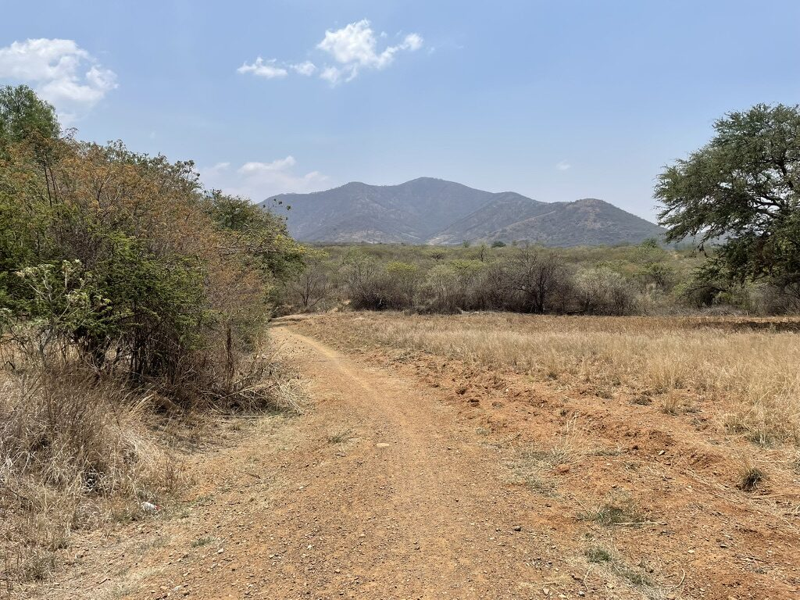

Tlacolula Loop
Out of the city before seven, while the air still held some of the night's cold. The road east on the 190 is fast and flat but unpleasant — trucks — so I turned off at Santa María del Tule and picked up the dirt from there.

The valley floor between Tule and Tlacolula is good gravel, packed firm from the dry season. Agave on both sides, some of it headed, some of it still low and grey-green. A dog followed me for about three kilometres out of Díaz Ordaz before losing interest. I stopped to eat a mandarina at a tianguis just off the road in Tlacolula and talked briefly with a man selling mezcal out of unlabelled bottles who wanted to know where I was going.
The climb south out of Tlacolula is the reason to do this loop. Steep cobblestone for the first kilometre, then loose dirt as the track narrows into the hills. It took forty minutes to reach the ridge. From the top you can see the whole valley floor, the city a smudge of white to the west, Monte Albán just visible on its hill. I sat there long enough to eat the rest of what I had.
The descent back toward the 190 is fast and mostly smooth. I was back on pavement by early afternoon with enough time to stop for a tlayuda before the last twenty kilometres home.